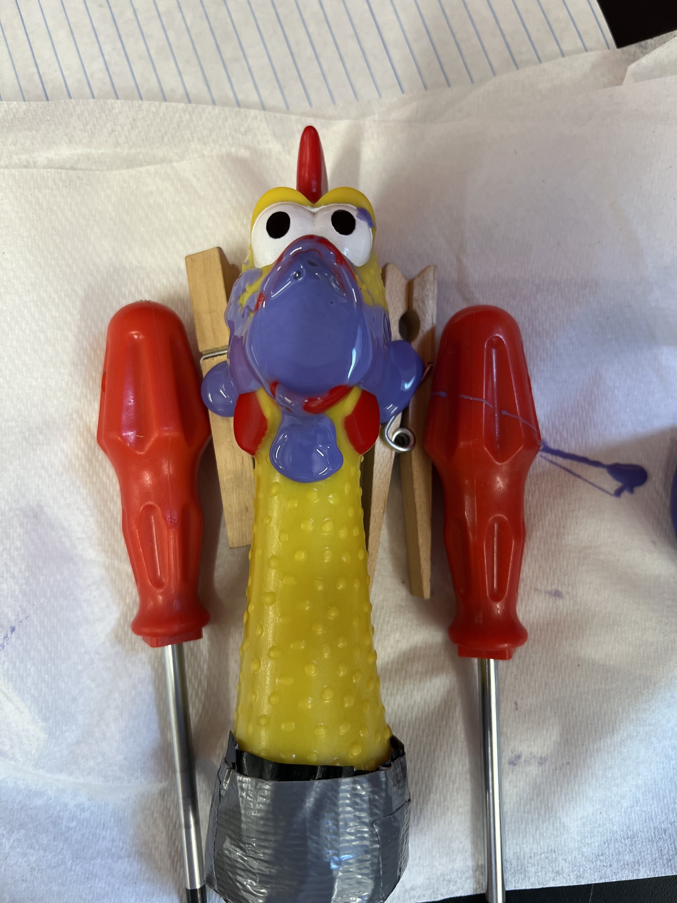
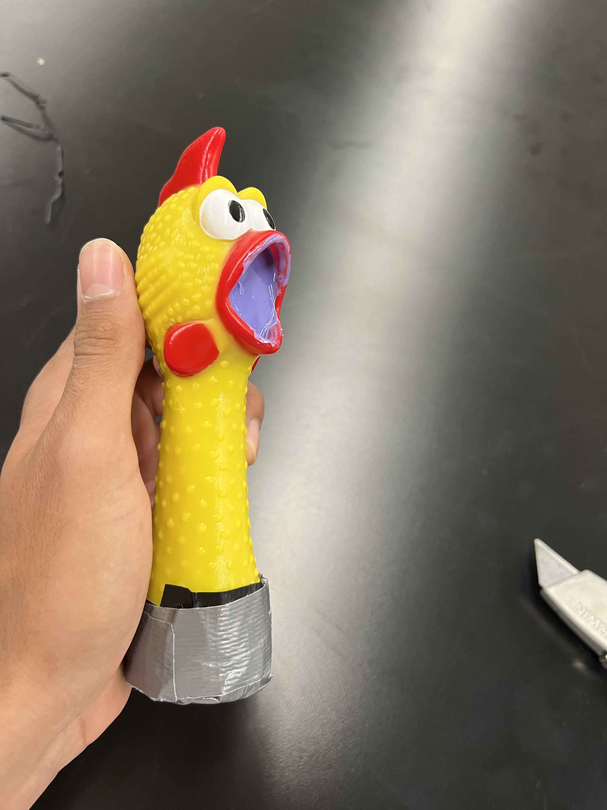

Mustafa Omran: Electronic Input Devices
<h5>This week's assignment's goal was to get students confortable with CNC. CNC or Computer numerical controlis a method for automating control of machine tools. We first started by exploring the different types of CNC machines and learned numerous concepts ranging from "speeds and feeds" which refers to the machines cutting speed and feed rate and the difference between a CNC router and a CNC mill. CNC is a useful skill to learn as it is used nearly everywhere and is guaranteed to show up again in your career.</h5>
<br><hr style="border-top: dotted 5px;">
<h3><b>CNC Milling</b></h3>
<h5>As a refresher, these are the shapes I chose to do last time. As you can clearly see, there are two types of shapes; one written in <a href="https://belmontschools13.autodesk360.com/g/shares/SH9285eQTcf875d3c5390f33729bd219389a" style="color: #0645AD" target="_blank">cursive</a>, and one written in <a href="https://belmontschools13.autodesk360.com/g/shares/SH9285eQTcf875d3c539b06b498408a00510" style="color: #0645AD" target="_blank">script</a>. This was an issue I had to tackle because while the cursive looks ten times better, it was too complex (i.e. too many lines) which would render the final design to be pixelated and rough which explains my decision to go with the scirpt sketch.</h5><br>
<img src="../images/CNC/Screenshot (21).png" width="550" alt="">
<img src="../images/CNC/Screenshot (23).png" width="550" alt=""><br><br>
<h5>I first headed to <a href="mods.cda.mit.edu" style="color: #0645AD" target="_blank">moda.cba.mit.edu</a> to find myself to an empty screen. I followed the Right click -> Programs -> Open Server Program -> Machines -> Roland mill -> SRM-20 -> mill 3D stl example to find my self to this interface.</h5>
<img src="../images/cnc/IMG_0076.jpg" width="1000" alt="">
<h5>After following the <a style="color: #0645AD" target="_blank"href="https://nathanmelenbrink.github.io/intro-dig-fab/07_cnc/index.html">instructions</a> on how to use the was machine, I ended up with this</h5>
<br><h5>While there was a flaw, the design turned out to be decent.</h5>
<img src="../images/cnc/IMG_0127.jpg" width="500" alt="">
<img src="../images/cnc/IMG_0128.jpg" width="500" alt="">
<h5>Not perfect though. I wanted to create someting more refined. I used this opportunity to try the ShopBot so I would have experiance with both types CNCs. I hopped onto CAD and created the another nameplate but with a different font and litteral refined edges. I then saved previously mentioned design as a DXF file.</h5>
<h5>I then calibrated the machine and tried an aircut to make sure that everything was going according to plan.</h5>
<!-- <video controls width="350" muted>
<source src="../images/CNC/IMG_0118.mp4" type="video/mp4">
</video> -->
<br><br><h5>With everyting gone smoothly, I calibrated the machine's x and y values and used the paper test to calibrate its z value. The paper test consists of putting a paper right under the mill and lowering the mill until there is a slight amount of force holding the paper down.</h5>
<video controls width="350" autoplay muted loop>
<source src="../images/CNC/CNC_Movie3.mp4" type="video/mp4">
</video>
<br><br><h5>After a long proccess and with wonderful help from Kassia, we are able to finally get this nice carved nameplate.</h5>
<img src="../images/cnc/IMG_0134.jpg" width="350" alt="">
<img src="../images/cnc/IMG_0135.jpg" width="350" alt="">
<img src="../images/cnc/IMG_0137.jpg" width="350" alt="">
<br><hr><br>
<h3><b>Molding & Casting</b></h3>
<br><h5>On our quest to find something interesting and unique to mold and cast, we found a rubber chicken in the lab. What was it doing there? I have as much information as you do. After careful consideration (a.k.a 5 seconds of thinking) we decided to go with the project.</h5><br>
<h5>There was, however, a small mistake that needed to be tackled. The chicken was hollow on the inside. This meant that we needed to fill it up in some way in order to be able to get it out when we eventually molded it.</h5>
<h5>To do that, I first tried filling it up with hot-glue but it was quickly realized to be a not so efficient way of solving our problem. Instead of hot-glue, I made a small mixture of silicon and poured it inside the chicken and let it dry overnight.</h5>


<br><br><h5>After it was all done, it was time to create the big mixture. Mixing solution "Part A" and "Part B" at a 1:1 ratio generated a substance that could be easily poured in a beaker where the chicken was already attached with a series of ropes to help solve the issue of material buoency.</h5>
<video controls width="400" autoplay muted loop>
<!-- Mixing -->
<source src="../images/CNC/IMG_1526.mp4" type="video/mp4">
</video><br>
<video controls width="400" autoplay muted loop>
<!-- Pouring -->
<source src="../images/CNC/IMG_1527.mp4" type="video/mp4">
</video><br><br><br>
<h5>A day later, the substance was hard and dried up. After an intense fight with trying to get the stuck silicon mold out of the beaker, we learned a valuable lesson. Always use Quick-Release in your mixture!</h5>
<video controls width="400" autoplay muted loop>
<!-- Hardening -->
<source src="../images/CNC/IMG_0079.mp4" type="video/mp4">
</video>
<br><h5>I then followed by heating some bismouth alloy metal and slowly pouring it in. It is very important to go slowly and ensure to take the bismouth off the hot-plate as soon as it has melted. I learned this the hard way after the bismouth melted through my mold and leaked. I had to recup all the leaking bismouth and start over with a lot of reinforcment tape.</h5>
<br><br><h5>Anyway, here's a <u>beautiful</u> collage of the final result.</h5>
<img src="../images/cnc/BeFunky-collage.jpg" width="1000" alt="Metal Chicken">
<br><br><br>
<cite><a style="color: #0645AD" href="https://randomnerdtutorials.com" target="_blank">Part of the first code section was inspired by Random Nerd Tutorials</a></cite><br>
<p style="text-align: right;">&copy; 2022 Mustafa Omran</p>